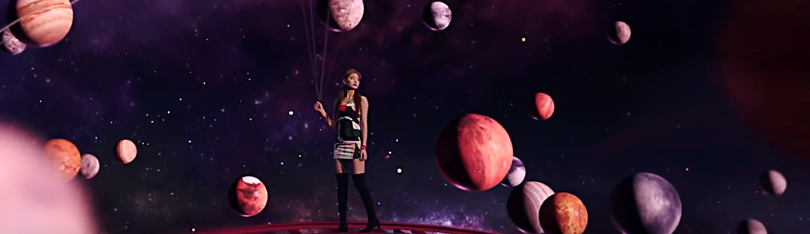

Trouvez la planète associée à votre signe astrologique
Le 30.05.19 par Maï Mirbeau-Baudin

Saviez-vous que toutes les planètes sont reignées par un signe astrologique bien particulier parmi les douze signes? Les planètes influencent notre personnalité et permettent de mieux interpréter notre horoscope journalier.
Il s'agit ici de la planète maîtresse de votre signe, et non de la planète qui domine votre signe. Faites donc attention en lisant votre charte natale, les signes qui ont pour position une planète sont différents !
Le Soleil : le Lion
Le Soleil est au centre de notre système solaire. Il ne passe jamais inaperçu, et amène toujours l'attention sur lui-même. À cause de cela, il a du mal avec le regard des autres, et a tendance à exaggérer ses faits et gestes.
La Lune : le Cancer
La Lune est plus discrète, mais est toujours autour de nous, tout proche. Elle a l'instinct d'une mère protectrice et est signe de douceur. Elle est aussi hypersensible, faites attention à ce que vous pourrez lui dire.
Mercure : Gémeaux et Vierge
Mercure cherche à établir le contact. Il est capable grâce à sa grande intelligence de retourner complètement sa veste pour plaire à son interlocuteur. C'est aussi la source de sa grande méfiance envers autrui.
Vénus : Taureau et Balance
Vénus aime faire plaisir. Elle se sent utile lorsqu'on l'aime et déborde d'affection pour quiconque lui en donnerait. Pour ceux qui ne lui en donne pas, en revanche...
Mars : Bélier et Scorpion
Mars est un être discret, mais qui n'hésite pas à défendre ses idées. Il essaie tout ce qui lui passe par la tête sans hésitation. C'est son côté autodestructeur. A force de vivre au jour le jour, il attend beaucoup de la vie.
Jupiter : le Sagittaire
Jupiter est efficace dans tout ce qu'il entreprend. Il cherche la méthode la plus sûre, la plus rapide et celle qui demande le moins d'effort. Il cherchera à travailler en équipe et est un atout pour chaque projet.
Saturne est rigoureux et perfectionniste dans son travail. Il n'est ni extraverti ni introverti, il choisit sa solitude pour méditer de ses actions. Trop honnête, il déteste les mensonges et vous le fera savoir.
Uranus : le Verseau
Uranus fait avancer les choses. Il veut que le monde progresse et s'engage à créer des inventions nouvelles. Il ne se préoccupe pas de ceux qui lui font perdre son temps.
Neptune : les Poissons
Nepture est imaginatif, il déborde d'inspiration ; c'est un artiste. Il n'est pas restreint par les contraintes matérielles de la réalité. Néanmoins, il reste très réaliste et sait s'adapter à la situation. Il cherche l'état fusionnel.
Vous en savez maintenant plus sur les planètes du système solaire. Allez donc en parlez à vos amis, et apprenez leur quelle est la planète qui leur est associée !
« Revenir aux articles